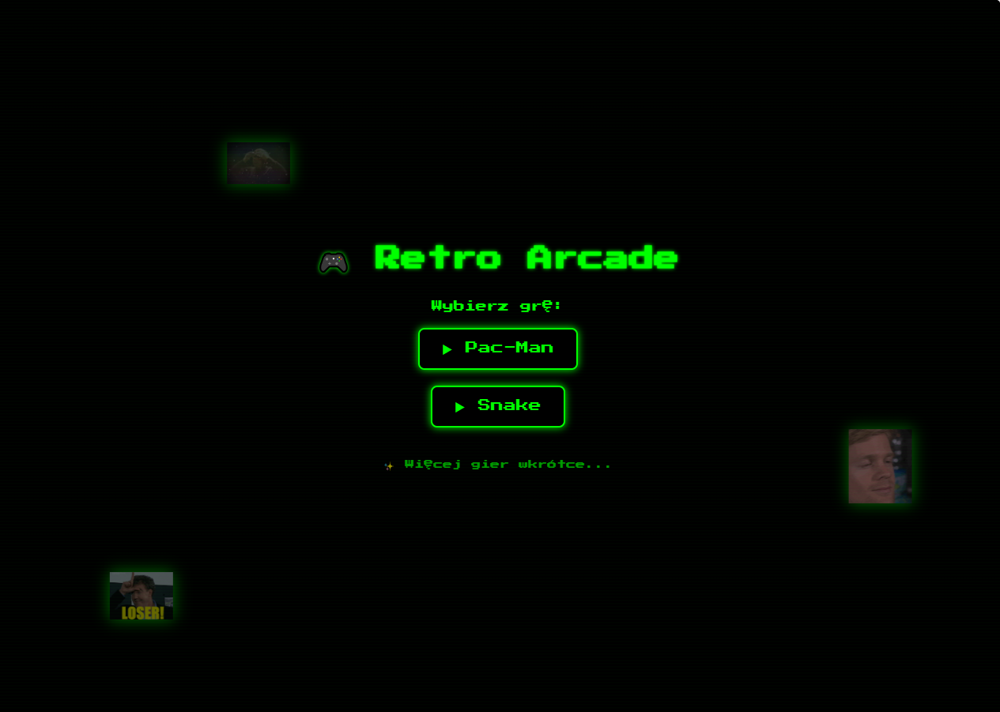

Wprowadzenie do klasycznego retro wyboru gier
Menu główne stanowi serce naszego projektu – to elegancka strona startowa, z której gracz wybiera pomiędzy Snake a Pac-Manem. Jego wygląd nawiązuje do klimatu retro automatów: neonowa zieleń, pikselowe przyciski i czarne tło budują klimat salonów arcade z lat 80.
Wszystko zaprojektowano ręcznie przy użyciu HTML, CSS oraz czcionki retro. Przyciskom towarzyszą animacje i cienie, a cały układ działa responsywnie – od desktopów po małe laptopy. Dodatkowym smaczkiem są latające memowe gify w tle, które nadają stronie humoru i unikalnego charakteru.
Z poziomu menu można przejść do wybranej gry oraz wrócić po rozgrywce. Całość pełni funkcję nie tylko wizualną, ale i funkcjonalną – użytkownik ma jasny wybór i płynne przejście między elementami projektu.